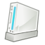

Wiican
Archivierte Anleitung
Dieser Artikel wurde archiviert, da er - oder Teile daraus - nur noch unter einer älteren Ubuntu-Version nutzbar ist. Diese Anleitung wird vom Wiki-Team weder auf Richtigkeit überprüft noch anderweitig gepflegt. Zusätzlich wurde der Artikel für weitere Änderungen gesperrt.
Zum Verständnis dieses Artikels sind folgende Seiten hilfreich:

Dieser Artikel stellt die Benachrichtigungsfeld-Anwendung Wiican vor. Wiican ermöglicht es dem Benutzer, eine Wiimote (oder auch Wii Remote Controller, Wii-Fernbedienung genannt) zu nutzen und zu konfigurieren. Es baut auf wminput  auf, dem cwiid-Treiber für Wiimote.
auf, dem cwiid-Treiber für Wiimote.
Es prüft, ob der benötigte Bluetooth-Adapter vorhanden ist und hilft dem Benutzer beim Verbinden/Trennen der Wiimote.
| Kein Bluetoothadapter | Bereit zum Verbinden |
Außerdem ist ein sogenannter "Mapping Manager" enthalten, der dabei hilft, verschiedene Wiimote-Konfigurationen zu bearbeiten und zu erstellen.
Installation¶
Nur bei Ubuntu 11.10 ist das Programm in den offiziellen Paketquellen enthalten [1]:
wiican (universe)
 mit apturl
mit apturl
Paketliste zum Kopieren:
sudo apt-get install wiican
sudo aptitude install wiican
Falls es bei der Ausführung zu Abstürzen wegen Problemen mit Bilddateien kommt (z.B. in Kubuntu 11.10), muss auch
python-rsvg
mit apturl
Paketliste zum Kopieren:
sudo apt-get install python-rsvg
sudo aptitude install python-rsvg
installiert werden.
Benutzung¶
Nach dem das Programm installiert worden ist, müssen nachträglich die Rechte von uinput angepasst werden. Das Kernelmodul uinput wird benötigt, um die Wiimote anzusprechen.
Achtung!
Im Normalfall darf nur der Benutzer root die uinput-Datei lesen. Mit der folgenden Änderungen wird es allen Benutzern auf dem Rechner erlaubt, das uinput-Modul zu nutzen. Dies kann ein Sicherheitsrisiko sein!
Um die Rechte an der uinput-Datei zu ändern, gibt man folgendes im Terminal[5] ein:
sudo touch /etc/udev/rules.d/11_uinput.rules
Nun öffnet man die Datei /etc/udev/rules.d/11_uinput.rules mit einem Editor[6] mit Rootrechten [7] und gibt dort ein:
KERNEL=="uinput", MODE="0666"
In einem Terminal [5] gibt man zuletzt noch folgenden Befehl ein, um die geänderten Rechte direkt anzuwenden:
sudo service udev restart
Danach steht jedem Benutzer die Wiimote zur Verfügung. Man startet Wiican nun über
"K-Menü -> Programme -> Zubehör -> Wiican (KDE)"
"Anwendungen -> Zubehör -> Wiican (GNOME)"
oder über den Aufruf "wiican" [4]
Nun kann man die Wiimote mittels  konfigurieren oder
konfigurieren oder  verbinden.
verbinden.
Wiican konfigurieren¶
Um Wiican zu konfigurieren, klickt man mit der rechten Maustaste auf das Benachrichtigungsfeld-Symbol von Wiican, so erscheint ein Menü, in dem man den Menüpunkt "Einstellungen" wählt. Im folgenden Fenster kann man nun voreingestellte Konfigurationen auswählen oder eine neue erstellen. Um die Wiimote als Maus einzustellen, hat sich folgende Konfiguration bewährt:
Im Fenster "Wiimote Mappings" auf "Neu" klicken
Als Name "WiiMaus" eingeben
Unter Beschreibung gibt man ein, was diese Konfiguration bewirken soll, z.B. "Ersetzt die Maus durch die Wiimote"
Unter "Mapping" folgenden Code einfügen:
Wiimote.A = BTN_LEFT Wiimote.B = BTN_RIGHT # Wiimote.Up = KEY_UP Wiimote.Down = KEY_DOWN Wiimote.Left = KEY_LEFT Wiimote.Right = KEY_RIGHT Wiimote.Minus = KEY_KPMINUS Wiimote.Plus = KEY_KPPLUS Wiimote.Home = KEY_ESC Wiimote.1 = KEY_ENTER Wiimote.2 = KEY_P Nunchuk.C = BTN_LEFT Nunchuk.Z = BTN_RIGHT # Classic.Up = KEY_UP Classic.Down = KEY_DOWN Classic.Left = KEY_LEFT Classic.Right = KEY_RIGHT Classic.Minus = KEY_KPMINUS Classic.Plus = KEY_KPPLUS Classic.Home = KEY_ESC Classic.A = BTN_LEFT Classic.B = BTN_RIGHT #Classic.X = #Classic.Y = #Classic.ZL = #Classic.ZR = #Classic.L = #Classic.R = # Plugin.ir_ptr.X = ABS_X Plugin.ir_ptr.Y = ABS_Y
Auf "OK" klicken
Nun sollte sich die Maus durch die Wiimote ersetzen lassen.
Wiimote mit dem Computer verbinden¶
Dazu auf das Symbol ausführen, die gewünschte Konfiguration auswählen (in diesem Fall "WiiMaus") und warten bis oben "Verbunden" erscheint. Dann muss die Wiimote durch gleichzeitiges Drücken der Tasten 1 und 2 auf der Wiimote in den "Discover Modus" versetzt werden.
| Wiican Discover Modus | Wiican Discover Modus | Wiican Discover Modus |
Nach einigen Sekunden wandelt sich das Benachrichtigungsfeld-Symbol in eine Wiimote mit Verbindungswellen und die Maussteuerung lässt sich über das Neigen und Drehen der Wiimote bewerkstelligen. Der A-Knopf übernimmt bei dieser Konfiguration die Funktion der linken Maustaste , der B-Knopf auf der Rückseite die der rechten Maustaste , das Steuerkreuz die der Pfeiltasten (
→ ,
↑ ,
↓ ,
← ), die Tasten + und - die
+ und
- des Nummernblocks, die Home-Taste (blaues Haus) die der
Esc , Taste 1 die der
⏎ Taste, Taste 2 die der
P .
Plugins¶
Über verschieden Plugins, die bereits bei der Installation von Wiican installiert sind, lassen sich neben der Wiimote noch weiteres Zubehör nutzen:
| Wii Classic Controller | Wii Nunchuk |
Infrarot nutzen¶
Achtung!
Die hier vorgestellte Methode, die Infrarot-Funktion der Wiiremote zu nutzen, funktioniert zwar, ist allerdings für den dauerhaften Einsatz nicht geeignet. Es empfiehlt sich, eine andere Infrarot-Quelle zu nutzen.
Um die Infrarot-Funktion der Wiiremote zu nutzen, reicht es, zwei Teelichter vor dem Bildschirm aufzustellen. Danach lässt sich die Wiimote mit Infrarot steuern, was bewirkt, das man auf den Computer-Bildschirm zeigen und somit exakter navigieren kann. Es gibt im geeigneten Fachhandel in Zwischen auch "drahtlose" IR-Leisten, die mit Batterien betrieben werden und somit unabhängig von einer Konsole genutzt werden können.
Weitere Beispiele¶
Hier ein Beispiel, wie man den Classic-Controller einrichten kann:
Classic.Dpad.X = ABS_X Classic.Dpad.Y = ABS_Y Classic.LStick.X = ABS_HAT0X Classic.LStick.Y = ABS_HAT0Y Classic.RStick.X = ABS_HAT1X Classic.RStick.Y = ABS_HAT1Y Classic.A = BTN_A Classic.B = BTN_B Classic.X = BTN_X Classic.Y = BTN_Y Classic.Minus = BTN_SELECT Classic.Plus = BTN_START Classic.Home = BTN_MODE Classic.L = BTN_TL Classic.R = BTN_TR Classic.ZL = BTN_TL2 Classic.ZR = BTN_TR2
Frogatto¶
Mit Classic-Controller:
Classic.A = KEY_A Classic.B = KEY_S Classic.X = KEY_A Classic.Y = KEY_S Classic.Up = KEY_UP Classic.Down = KEY_DOWN Classic.Right = KEY_RIGHT Classic.Left = KEY_LEFT Classic.Minus = KEY_ESC Classic.Plus = KEY_ENTER Classic.Home = KEY_ESC
Links¶
Cwiid
- Information zu cwiid, worauf wiican basiertUbuntu Geek Beitrag
Ubuntugeek-Eintrag zum Thema Wiican und XBMC, 12/2009wminput Hilfe
Hilfe zur Syntax, die in Wiican genutzt wirdaction_enum.txt
 - possible keys
- possible keys
- Erstellt mit Inyoka
-
 2004 – 2017 ubuntuusers.de • Einige Rechte vorbehalten
2004 – 2017 ubuntuusers.de • Einige Rechte vorbehalten
Lizenz • Kontakt • Datenschutz • Impressum • Serverstatus -
Serverhousing gespendet von